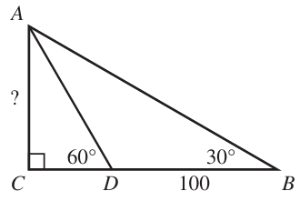

Trigonometry
Welcome to Our Site
I greet you this day,
For the Classic ACT exam:
The ACT Mathematics test is a timed exam...60 questions in 60 minutes
This implies that you have to solve each question in one minute.
Each of the first 20 questions (less challenging) will typically take less than a minute a solve.
Each of the next 20 questions (medium challenging) may take about a minute to solve.
Each of the last 20 questions (more challenging) may take more than a minute to solve.
The goal is to maximize your time.
You use the time saved on the questions you solve in less than a minute to solve questions that will take more
than a minute.
So, you should try to solve each question correctly and timely.
So, it is not just solving a question correctly, but solving it correctly on time.
Please ensure you attempt all ACT questions.
There is no negative penalty for a wrong answer.
Also: please note that unless specified otherwise, geometric figures are drawn to scale. So, you can figure out
the correct answer by eliminating the incorrect options.
Other suggestions are listed in the solutions/explanations as applicable.
These are the solutions to the ACT past questions on the topics in Trigonometry.
When applicable, the TI-84 Plus CE calculator (also applicable to TI-84 Plus calculator) solutions are provided
for some questions.
The link to the video solutions will be provided for you. Please
subscribe to the YouTube channel to be notified of upcoming livestreams. You are welcome to ask questions during
the video livestreams.
If you find these resources valuable and if any of these resources were helpful in your passing the
Mathematics test of the ACT, please consider making a donation:
Cash App: $ExamsSuccess or
cash.app/ExamsSuccess
PayPal: @ExamsSuccess or
PayPal.me/ExamsSuccess
Venmo: @ExamsSuccess or
Venmo.com/u/ExamsSuccess
Your donation is appreciated.
Comments, ideas, areas of improvement, questions, and constructive
criticisms are welcome.
Feel free to contact me. Please be positive in your message.
I wish you the best.
Thank you.
Please NOTE: For applicable questions (questions that require the angle in degrees), if you intend to
use the TI-84 Family:
Please make sure you set the MODE to DEGREE.
It is RADIAN by default. So, it needs to be set to DEGREE.

Coterminal Angles
Coterminal angles are angles with the same initial side and the same terminal side.
The concept of coterminal angles helps us to find the equivalent positive angle of a negative angle.
Because an angle in standard position is measured counterclockwise, adding 360° to it accounts for a full
revolution, keeping the direction intact.
Hence for any angle say θ, the coterminal angles are θ + 360k where k is any integer.
Trigonometric Functions
Right Triangle Trigonometry for any angle, say $\theta$
Pneumonic for it is: SOHCAHTOA and cosecHOsecHAcotanAO
$
(1.)\;\; \sin \theta = \dfrac{opp}{hyp} \\[7ex]
(2.)\;\; \cos \theta = \dfrac{adj}{hyp} \\[7ex]
(3.)\;\; \tan \theta = \dfrac{\sin \theta}{\cos \theta} \\[5ex]
= \sin \theta \div \cos \theta \\[3ex]
= \dfrac{opp}{hyp} \div \dfrac{adj}{hyp} \\[5ex]
= \dfrac{opp}{hyp} * \dfrac{hyp}{adj} \\[5ex]
\therefore \tan \theta = \dfrac{opp}{adj} \\[7ex]
(4.)\;\; \csc \theta = \dfrac{1}{\sin \theta} \\[5ex]
= 1 \div \sin \theta \\[3ex]
= 1 \div \dfrac{opp}{hyp} \\[5ex]
\therefore \csc \theta = \dfrac{hyp}{opp} \\[7ex]
(5.)\;\; \sec \theta = \dfrac{1}{\cos \theta} \\[5ex]
= 1 \div \cos \theta \\[3ex]
= 1 \div \dfrac{adj}{hyp} \\[5ex]
\therefore \sec \theta = \dfrac{hyp}{adj} \\[7ex]
(6.)\;\; \cot \theta = \dfrac{1}{\tan \theta} = \dfrac{\cos \theta}{\sin \theta} \\[5ex]
= \cos \theta \div \sin \theta \\[3ex]
= \dfrac{adj}{hyp} \div \dfrac{opp}{hyp} \\[5ex]
= \dfrac{adj}{hyp} * \dfrac{hyp}{opp} \\[5ex]
\therefore \cot \theta = \dfrac{adj}{opp}
$
Summary: The Unit Circle
| $\theta$ in DEG | $\theta$ in RAD | $\sin \theta$ | $\cos \theta$ | $\tan \theta$ | $\csc \theta$ | $\sec \theta$ | $\cot \theta$ |
|---|---|---|---|---|---|---|---|
| $0$ | $0$ | $0$ | $1$ | $0$ | $undefined$ | $1$ | $undefined$ |
| $30$ | $\dfrac{\pi}{6}$ | $\dfrac{1}{2}$ | $\dfrac{\sqrt{3}}{2}$ | $\dfrac{\sqrt{3}}{3}$ | $2$ | $\dfrac{2\sqrt{3}}{3}$ | $\sqrt{3}$ |
| $45$ | $\dfrac{\pi}{4}$ | $\dfrac{\sqrt{2}}{2}$ | $\dfrac{\sqrt{2}}{2}$ | $1$ | $\sqrt{2}$ | $\sqrt{2}$ | $1$ |
| $60$ | $\dfrac{\pi}{3}$ | $\dfrac{\sqrt{3}}{2}$ | $\dfrac{1}{2}$ | $\sqrt{3}$ | $\dfrac{2\sqrt{3}}{3}$ | $2$ | $\dfrac{\sqrt{3}}{3}$ |
| $90$ | $\dfrac{\pi}{2}$ | $1$ | $0$ | $undefined$ | $1$ | $undefined$ | $0$ |
| $120$ | $\dfrac{2\pi}{3}$ | $\dfrac{\sqrt{3}}{2}$ | $-\dfrac{1}{2}$ | $-\sqrt{3}$ | $\dfrac{2\sqrt{3}}{3}$ | $-2$ | $-\dfrac{\sqrt{3}}{3}$ |
| $135$ | $\dfrac{3\pi}{4}$ | $\dfrac{\sqrt{2}}{2}$ | $-\dfrac{\sqrt{2}}{2}$ | $-1$ | $\sqrt{2}$ | $-\sqrt{2}$ | $-1$ |
| $150$ | $\dfrac{5\pi}{6}$ | $\dfrac{1}{2}$ | $-\dfrac{\sqrt{3}}{2}$ | $-\dfrac{\sqrt{3}}{3}$ | $2$ | $-\dfrac{2\sqrt{3}}{3}$ | $-\sqrt{3}$ |
| $180$ | $\pi$ | $0$ | $-1$ | $0$ | $undefined$ | $-1$ | $undefined$ |
| $210$ | $\dfrac{7\pi}{6}$ | $-\dfrac{1}{2}$ | $-\dfrac{\sqrt{3}}{2}$ | $\dfrac{\sqrt{3}}{3}$ | $-2$ | $-\dfrac{2\sqrt{3}}{3}$ | $\sqrt{3}$ |
| $225$ | $\dfrac{5\pi}{4}$ | $-\dfrac{\sqrt{2}}{2}$ | $-\dfrac{\sqrt{2}}{2}$ | $1$ | $-\sqrt{2}$ | $-\sqrt{2}$ | $1$ |
| $240$ | $\dfrac{4\pi}{3}$ | $-\dfrac{\sqrt{3}}{2}$ | $-\dfrac{1}{2}$ | $\sqrt{3}$ | $-\dfrac{2\sqrt{3}}{3}$ | $-2$ | $\dfrac{\sqrt{3}}{3}$ |
| $270$ | $\dfrac{3\pi}{2}$ | $-1$ | $0$ | $undefined$ | $-1$ | $undefined$ | $0$ |
| $315$ | $\dfrac{7\pi}{4}$ | $-\dfrac{\sqrt{2}}{2}$ | $\dfrac{\sqrt{2}}{2}$ | $-1$ | $-\sqrt{2}$ | $\sqrt{2}$ | $-1$ |
| $300$ | $\dfrac{5\pi}{3}$ | $-\dfrac{\sqrt{3}}{2}$ | $\dfrac{1}{2}$ | $-\sqrt{3}$ | $-\dfrac{2\sqrt{3}}{3}$ | $2$ | $-\dfrac{\sqrt{3}}{3}$ |
| $330$ | $\dfrac{11\pi}{6}$ | $-\dfrac{1}{2}$ | $\dfrac{\sqrt{3}}{2}$ | $-\dfrac{\sqrt{3}}{3}$ | $-2$ | $\dfrac{2\sqrt{3}}{3}$ | $-\sqrt{3}$ |
| $360$ | $2\pi$ | $0$ | $1$ | $0$ | $undefined$ | $1$ | $undefined$ |
Trigonometric Identities
\begin{array}{c | c} II & I \\ \hline III & IV \end{array} = \begin{array}{c | c} S & A \\ \hline T & C \end{array} = \begin{array}{c | c} Sine\:\: is\:\: positive & All\:\: are\:\: positive \\ \hline Tangent\:\: is\:\: positive & Cosine\:\: is\:\: positive \end{array}
The pneumonic to remember it:
First Quadrant to Fourth Quadrant (clockwise direction): A-C-T-S (ACTS of the Apostles)
First Quadrant to Fourth Quadrant (counter-clockwise direction): A-S-T-C: ADD - SUGAR - TO - COFFEE
Fourth Quadrant to Third Quadrant (counter-clockwise direction): C-A-S-T (Simon Peter, CAST your net into the
sea.)
Second Quadrant to Third Quadrant (clockwise direction): S-A-C-T
Cofunction Identities (Identities of Complements)
First Quadrant Identities
First Quadrant: All (sine, cosine, tangent) are positive
This implies that cosecant, secant, and cotangent are also positive.
Given: two angles say: $\alpha$ and $\beta$;
If $\alpha$ and $\beta$ are complementary, then the:
Sine function and the Cosine functions are cofunctions
$
\sin \alpha = \cos \beta \\[3ex]
\cos \alpha = \sin \beta \\[3ex]
$
Tangent function and the Cotangent functions are cofunctions
$
\tan \alpha = \cot \beta \\[3ex]
\cot \alpha = \tan \beta \\[3ex]
$
Secant function and the Cosecant functions are cofunctions
$
\sec \alpha = \csc \beta \\[3ex]
\csc \alpha = \sec \beta \\[3ex]
$
Given: one angle say: $\theta$;
First Quadrant Identities or Cofunction Identities or Identities of Complements
$0 \lt \theta \lt 90 ...Angle\:\: in\:\: Degrees \\[3ex]$
Reference Angle = $\theta$ ... Angle in Degrees
$0 \lt \theta \lt \dfrac{\pi}{2} ...Angle\:\: in\:\: Radians \\[5ex]$
Reference Angle = $\theta$ ... Angle in Radians
First Quadrant: sine, cosine, tangent are positive
This implies that cosecant, secant, and cotangent are also positive
Complement of $\theta$ = $90 - \theta$ where $\theta$ is in degrees:
Complement of $\theta$ = $\dfrac{\pi}{2} - \theta$ where $\theta$ is in radians:
$
(1.)\:\: \sin \theta = \cos (90 - \theta) \\[3ex]
(2.)\:\: \sin \theta = \cos \left(\dfrac{\pi}{2} - \theta \right) \\[5ex]
(3.)\:\: \cos \theta = \sin (90 - \theta) \\[3ex]
(4.)\:\: \cos \theta = \sin \left(\dfrac{\pi}{2} - \theta \right) \\[5ex]
(5.)\:\: \tan \theta = \cot (90 - \theta) \\[3ex]
(6.)\:\: \tan \theta = \cot \left(\dfrac{\pi}{2} - \theta \right) \\[5ex]
(7.)\:\: \cot \theta = \tan (90 - \theta) \\[3ex]
(8.)\:\: \cot \theta = \tan \left(\dfrac{\pi}{2} - \theta \right) \\[5ex]
(9.)\:\: \sec \theta = \csc (90 - \theta) \\[3ex]
(10.)\:\: \sec \theta = \csc \left(\dfrac{\pi}{2} - \theta \right) \\[5ex]
(11.)\:\: \csc \theta = \sec (90 - \theta) \\[3ex]
(12.)\:\: \csc \theta = \sec \left(\dfrac{\pi}{2} - \theta \right) \\[7ex]
$
Second Quadrant Identities or Identities of Supplements
$90 \lt \theta \lt 180$ ... Angle in Degrees
Reference Angle = $180 - \theta$ ... Angle in Degrees
$\dfrac{\pi}{2} \lt \theta \lt \pi$ ... Angle in Radians
Reference Angle = $\pi - \theta$ ... Angle in Radians
Second Quadrant: sine is positive
This implies that cosecant is also positive
Symmetric across the y-axis
Given: one angle say: $\theta$;
Supplement of $\theta$ = $180 - \theta$ where $\theta$ is in degrees:
Supplement of $\theta$ = $\pi - \theta$ where $\theta$ is in radians:
$
(1.)\;\; \sin \theta = \sin (180 - \theta) \\[3ex]
(2.)\;\; \sin (180 - \theta) = \sin \theta \\[3ex]
(3.)\;\; \sin \theta = \sin (\pi - \theta) \\[3ex]
(4.)\;\; \sin (\pi - \theta) = \sin \theta \\[3ex]
(5.)\;\; \cos \theta = -\cos (180 - \theta) \\[3ex]
(6.)\;\; \cos (180 - \theta) = -\cos \theta \\[3ex]
(7.)\;\; \cos \theta = -\cos (\pi - \theta) \\[3ex]
(8.)\;\; \cos (\pi - \theta) = -\cos \theta \\[3ex]
(9.)\;\; \tan \theta = -\tan (180 - \theta) \\[3ex]
(10.)\;\; \tan (180 - \theta) = -\tan \theta \\[3ex]
(11.)\;\; \tan \theta = -\tan (\pi - \theta) \\[3ex]
(12.)\;\; \tan (\pi - \theta) = -\tan \theta \\[5ex]
$
Third Quadrant Identities
$180 \lt \theta \lt 270$ ... Angle in Degrees
Reference Angle = $\theta - 180$ ... Angle in Degrees
$\pi \lt \theta \lt \dfrac{3\pi}{2}$ ... Angle in Radians
Reference Angle = $\theta - \pi$ ... Angle in Radians
Third Quadrant: tangent is positive
This implies that cotangent is also positive
Symmetric across the origin
Given: one angle say: $\theta$;
$
(1.)\;\; \sin \theta = -\sin (\theta - 180) \\[3ex]
(2.)\;\; \sin (\theta - 180) = -\sin \theta \\[3ex]
(3.)\;\; \sin \theta = -\sin (\theta - \pi) \\[3ex]
(4.)\;\; \sin (\theta - \pi) = -\sin \theta \\[3ex]
(5.)\;\; \cos \theta = -\cos (\theta - 180) \\[3ex]
(6.)\;\; \cos (\theta - 180) = -\cos \theta \\[3ex]
(7.)\;\; \cos \theta = -\cos (\theta - \pi) \\[3ex]
(8.)\;\; \cos (\theta - \pi) = -\cos \theta \\[3ex]
(9.)\;\; \tan \theta = \tan (\theta - 180) \\[3ex]
(10.)\;\; \tan (\theta - 180) = \tan \theta \\[3ex]
(11.)\;\; \tan \theta = \tan (\theta - \pi) \\[3ex]
(12.)\;\; \tan (\theta - \pi) = \tan \theta \\[5ex]
$
But if $\theta \lt 180$, use $\theta + 180$
Fourth Quadrant Identities
$270 \lt \theta \lt 360$ ... Angle in Degrees
Reference Angle = $360 - \theta$ ... Angle in Degrees
$\dfrac{3\pi}{2} \lt \theta \lt 2\pi$ ... Angle in Radians
Reference Angle = $2\pi - \theta$ ... Angle in Radians
Fourth Quadrant: cosine is positive
This implies that secant is also positive
Symmetric across the x-axis
Given: one angle say: $\theta$;
$
(1.)\;\; \sin \theta = -\sin (360 - \theta) \\[3ex]
(2.)\;\; \sin (360 - \theta) = -\sin \theta \\[3ex]
(3.)\;\; \sin \theta = -\sin (2\pi - \theta) \\[3ex]
(4.)\;\; \sin (2\pi - \theta) = -\sin \theta \\[3ex]
(5.)\;\; \cos \theta = \cos (360 - \theta) \\[3ex]
(6.)\;\; \cos (360 - \theta) = \cos \theta \\[3ex]
(7.)\;\; \cos \theta = \cos (2\pi - \theta) \\[3ex]
(8.)\;\; \cos (2\pi - \theta) = \cos \theta \\[3ex]
(9.)\;\; \tan \theta = -\tan (360 - \theta) \\[3ex]
(10.)\;\; \tan (360 - \theta) = -\tan \theta \\[3ex]
(11.)\;\; \tan \theta = -\tan (2\pi - \theta) \\[3ex]
(12.)\;\; \tan (2\pi - \theta) = -\tan \theta \\[3ex]
$
Reciprocal Identities
$
(1.)\;\; \csc \theta = \dfrac{1}{\sin \theta} \\[3ex]
(2.)\;\; \sec \theta = \dfrac{1}{\cos \theta} \\[3ex]
(3.)\;\; \cot \theta = \dfrac{1}{\tan \theta} \\[3ex]
$
From Reciprocal Identities
$
(1.)\;\; \sin \theta = \dfrac{1}{\csc \theta} \\[3ex]
(2.)\;\; \cos \theta = \dfrac{1}{\sec \theta} \\[3ex]
(3.)\;\; \tan \theta = \dfrac{1}{\cot \theta} \\[5ex]
$
Quotient Identities
$
(1.)\;\; \tan \theta = \dfrac{\sin \theta}{\cos \theta} \\[3ex]
(2.)\;\; \cot \theta = \dfrac{\cos \theta}{\sin \theta} \\[3ex]
$
As you can see, $\cot \theta$ has two formulas
$
\cot \theta = \dfrac{1}{\tan \theta} \\[5ex]
\cot \theta = \dfrac{\cos \theta}{\sin \theta} \\[5ex]
$
Sometimes, we shall use the first one. Sometimes, we shall use the second one.
We have to use the formula that will not give us an undefined value (where the denominator is zero)
Even Identities
Recall: a function, say $f(x)$ is even if $f(-x) = f(x)$
In Trigonometry, the cosine function and the secant function are even functions.
$
(1.)\;\; \cos (-\theta) = \cos \theta \\[3ex]
(2.)\;\; \sec (-\theta) = \sec \theta \\[5ex]
$
Odd Identities
Recall: a function, say $f(x)$ is odd if $f(-x) = -f(x)$
In Trigonometry, the sine function, the cosecant function,
the tangent function, and the cotangent function are odd functions.
$
(1.)\;\; \sin (-\theta) = -\sin \theta \\[3ex]
(2.)\;\; \csc (-\theta) = -\csc \theta \\[3ex]
(3.)\;\; \tan (-\theta) = -\tan \theta \\[3ex]
(4.)\;\; \cot (-\theta) = -\cot \theta \\[5ex]
$
Pythagorean Identities
$
(1.)\;\; \sin^2 \theta + \cos^2 \theta = 1 \\[3ex]
(2.)\;\; \tan^2 \theta + 1 = \sec^2 \theta \\[3ex]
(3.)\;\; \cot^2 \theta + 1 = \csc^2 \theta \\[3ex]
$
From Pythagorean Identities
$
(1.)\;\; \sin \theta = \pm \sqrt{1 - \cos^2 \theta} \\[3ex]
(2.)\;\; \cos \theta = \pm \sqrt{1 - \sin^2 \theta} \\[3ex]
(3.)\;\; \tan \theta = \pm \sqrt{\sec^2 \theta - 1} \\[3ex]
(4.)\;\; \sec \theta = \pm \sqrt{\tan^2 \theta + 1} \\[3ex]
(5.)\;\; \cot \theta = \pm \sqrt{\csc^2 \theta - 1} \\[3ex]
(6.)\;\; \csc \theta = \pm \sqrt{\cot^2 \theta + 1}
$
Trigonometric Formulas
Sum and Difference Formulas
$
(1.)\;\; \sin (\alpha \pm \beta) = \sin \alpha \cos \beta \pm \cos \alpha \sin \beta \\[3ex]
(2.)\;\; \cos (\alpha \pm \beta) = \cos \alpha \cos \beta \mp \sin \alpha \sin \beta \\[3ex]
(3.)\;\; \tan (\alpha \pm \beta) = \dfrac{\tan \alpha \pm \tan \beta}{1 \mp \tan \alpha \tan \beta} \\[5ex]
$
Half-Angle Formulas
$
(1.)\;\; \sin \dfrac{\theta}{2} = \pm \sqrt{\dfrac{1 - \cos \theta}{2}} \\[5ex]
(2.)\;\; \cos {\theta \over 2} = \pm \sqrt{\dfrac{1 + \cos \theta}{2}} \\[5ex]
(3.)\;\; \tan {\theta \over 2} = \pm \sqrt{\dfrac{1 - \cos \theta}{1 + \cos \theta}} \\[5ex]
(4.)\;\; \tan {\theta \over 2} = \dfrac{\sin \theta}{1 + \cos \theta} \\[5ex]
(5.)\;\; \tan {\theta \over 2} = \dfrac{1 - \cos \theta}{\sin \theta} \\[5ex]
$
Formulas from Half-Angle Formulas
$
(1.)\;\; \sin^2 \dfrac{\theta}{2} = \dfrac{1 - \cos \theta}{2} \\[5ex]
(2.)\;\; \cos^2 \dfrac{\theta}{2} = \dfrac{1 + \cos \theta}{2} \\[5ex]
(3.)\;\; \tan^2 \dfrac{\theta}{2} = \dfrac{1 - \cos \theta}{1 + \cos \theta} \\[7ex]
$
Double-Angle Formulas
$
(1.)\;\; \sin (2\theta) = 2 \sin \theta \cos \theta \\[3ex]
(2.)\;\; \cos (2\theta) = \cos^2 \theta - \sin^2 \theta \\[3ex]
(3.)\;\; \cos (2\theta) = 1 - 2\sin^2 \theta \\[3ex]
(4.)\;\; \cos (2\theta) = 2\cos^2 \theta - 1 \\[3ex]
(5.)\;\; \tan (2\theta) = \dfrac{2\tan \theta}{1 - \tan^2 \theta} \\[5ex]
$
Formulas from Double-Angle Formulas
$
(1.)\;\; \sin^2 \theta = \dfrac{1 - \cos(2\theta)}{2} \\[5ex]
(2.)\;\; \cos^2 \theta = \dfrac{1 + \cos(2\theta)}{2} \\[5ex]
(3.)\;\; \tan^2 \theta = \dfrac{1 - \cos(2\theta)}{1 + \cos(2\theta)} \\[7ex]
$
Triple-Angle Formulas
$
(1.)\;\; \sin (3\theta) = 3 \sin \theta - 4\sin^3 \theta \\[3ex]
(2.)\;\; \cos (3\theta) = 4 \cos^3 \theta - 3 \cos \theta \\[3ex]
(3.)\;\; \tan (3\theta) = \dfrac{3\tan \theta - \tan^3 \theta}{1 - 3\tan^2 \theta} \\[7ex]
$
Sum-to-Product Formulas
$
(1.)\;\; \sin \alpha + \sin \beta = 2 \sin \left(\dfrac{\alpha + \beta}{2}\right) \cos \left(\dfrac{\alpha -
\beta}{2}\right) \\[5ex]
(2.)\;\; \sin \alpha - \sin \beta = 2 \sin \left(\dfrac{\alpha - \beta}{2}\right) \cos \left(\dfrac{\alpha +
\beta}{2}\right) \\[5ex]
(3.)\;\; \cos \alpha + \cos \beta = 2 \cos \left(\dfrac{\alpha + \beta}{2}\right) \cos \left(\dfrac{\alpha -
\beta}{2}\right) \\[5ex]
(4.)\;\; \cos \alpha - \cos \beta = -2 \sin \left(\dfrac{\alpha + \beta}{2}\right) \sin \left(\dfrac{\alpha -
\beta}{2}\right) \\[5ex]
$
Ask students to write the compact form / shortened form of the first two Sum-to-Product Formulas.
Sum-to-Product Formulas (Compact Form of the First Two Formulas)
$
(1.)\;\; \sin \alpha \pm \sin \beta = 2 \sin \dfrac{\alpha \pm \beta}{2} \cos \dfrac{\alpha \mp \beta}{2}
\\[7ex]
$
Product-to-Sum Formulas
$
(1.) \sin \alpha * \sin \beta = \dfrac{1}{2} [\cos(\alpha - \beta) - \cos(\alpha + \beta)] \\[5ex]
(2.) \cos \alpha * \cos \beta = \dfrac{1}{2} [\cos(\alpha - \beta) + \cos(\alpha + \beta)] \\[5ex]
(3.) \sin \alpha * \cos \beta = \dfrac{1}{2} [\sin(\alpha + \beta) + \sin(\alpha + \beta)] \\[5ex]
$
Factoring Formulas
x is any trigonometric ratio
y is any trigonometric ratio
$
\underline{Difference\;\;of\;\;Two\;\;Squares} \\[3ex]
(1.)\;\;x^2 - y^2 = (x + y)(x - y) \\[5ex]
\underline{Difference\;\;of\;\;Two\;\;Cubes} \\[3ex]
(2.)\;\; x^3 - y^3 = (x - y)(x^2 + xy + y^2) \\[5ex]
\underline{Sum\;\;of\;\;Two\;\;Cubes} \\[3ex]
(3.)\;\; x^3 + y^3 = (x + y)(x^2 - xy + y^2) \\[5ex]
$
Triangle Laws
Sine Law:
Applies to all triangles.
It states that the ratio of the side length of any triangle to the sine of the angle measure opposite that side
is the same for the three sides of the triangle.
$
\dfrac{a}{\sin A} = \dfrac{b}{\sin B} = \dfrac{c}{\sin C} \\[5ex]
$
OR
The ratio of the angle measure of any triangle to the side length opposite that angle is the same for the three
angles of the triangle.
$
\dfrac{\sin A}{a} = \dfrac{\sin B}{b} = \dfrac{\sin C}{c} \\[5ex]
$
Cosine Law:
Applies to all triangles.
It states that the square of a side of a triangle is the difference between the sum of the squares of the other
two sides and twice the product of the two sides and the included angle.
$
a^2 = b^2 + c^2 - 2bc \cos A \\[3ex]
\cos A = \dfrac{b^2 + c^2 - a^2}{2bc} \\[5ex]
\rightarrow A = \cos^{-1} \left(\dfrac{b^2 + c^2 - a^2}{2bc}\right) \\[5ex]
b^2 = a^2 + c^2 - 2ac \cos B \\[3ex]
\cos B = \dfrac{a^2 + c^2 - b^2}{2ac} \\[5ex]
\rightarrow B = \cos^{-1} \left(\dfrac{a^2 + c^2 - b^2}{2ac}\right) \\[5ex]
c^2 = a^2 + b^2 - 2ab \cos C \\[3ex]
\cos C = \dfrac{a^2 + b^2 - c^2}{2ab} \\[5ex]
\rightarrow C = \cos^{-1} \left(\dfrac{a^2 + b^2 - c^2}{2ab}\right) \\[5ex]
$
Theorems
(1.) Sum of Angles of a Triangle Theorem:
The sum of the interior angles of a triangle is 180°
(2.) In a 30° – 60° – 90° right triangle; the length of the hypotenuse
is twice the length of the short side.
(3.) In a 30° – 60° – 90° right triangle; the length of the middle side
is the square root of 3 times the length of short side.
(4.) In a 45° – 45° – 90° right triangle theorem (Right Isosceles Triangle
Theorem); the length of the hypotenuse is the square root of 2 times the length of either side.
(5.) Pythagorean Theorem: Applies only to right triangles.
In a right triangle, the square of the length of the hypotenuse is the
sum of the squares of the short side and the middle side.
$hyp^2 = leg^2 + leg^2$
(6.) Converse of the Pythagorean Theorem (Right Triangle Theorem):
If the square of the long side(hypotenuse) is the
sum of the squares of the other two sides, then the triangle is a right triangle.
(7.) Acute Triangle Theorem: If the square of the long side is less than the sum of the squares of the
other two sides, then the triangle is an acute triangle.
(8.) Obtuse Triangle Theorem: If the square of the long side is greater than the sum of the squares of
the other two sides, then the triangle is an obtuse triangle.
(9.) Triangle Inequality Theorem: This is the theorem that determines if you can form a triangle using
any three lengths.
The sum of the lengths of any two sides of a triangle is greater than the length of the third side.
(10.) Side Length – Angle Measure Theorem: If any two side lengths of a triangle are unequal; the
angles of the triangle are also unequal, and the measure of an angle is opposite the length of the side facing
that angle as regards size.
The measure of the smallest angle is opposite the shortest side length.
The measure of the greatest angle is opposite the longest side length.
The measure of the middle angle is opposite the middle side length.
In other words; regarding size, the measure of an angle is opposite the length of the side facing the
angle; or the side length facing an angle is opposite the angle measure as regards size.
Small side faces small angle, middle side faces middle angle, big side faces big angle
(11.) Exterior Angle of a Triangle Theorem: The exterior angle of a triangle is the sum of the two
interior opposite angles.
(12.) Isosceles Base Angles Theorem: The base angles of an isosceles triangle are equal.
(13.) Converse of the Isosceles Base Angles Theorem: If the base angles of a triangle are equal, then the
triangle is an isosceles triangle.
(14.) Perpendicular Bisector of the Base of an Isosceles Triangle Theorem: It states that if a line
bisects the vertex angle of an isosceles triangle, then the line is also the perpendicular
bisector of the base (the line also bisects the base of that isosceles triangle at right angles).
(15.) Perpendicular Height to Base of Isosceles Triangle Theorem It states that the perpendicular height
drawn from the apex of an isosceles triangle to the base:
(a.) bisects the base
(b.) bisects the apex angle.
(16.) Side-Splitter Theorem Applies to all triangles with inserted parallel lines as applicable.
It states that if a line segment is parallel to one side of a triangle and intersects the other two sides of
the triangle, then it divides those two sides proportionally.
(17.) Midpoint Theorem Applies to all triangles in which a line segment
joins the midpoints of any two sides of the triangle.
It states that if a line segment joins any two sides of a triangle, then the line segment:
(a.) is parallel to the third side.
(b.) bisects the third side.
(18.) Converse of the Midpoint Theorem A line segment drawn through the midpoint of one side of a
triangle and parallel to another side, bisects the third side.
(19.) Scale Factor, Perimeter Ratio, and Area Ratio of Similar Figures Theorem Applies to all similar
figures including similar triangles.
It states that for two similar figures, the ratio of the perimeters is the same as the scale factor; and the
ratio of the areas is the ratio of the square of the scale factor.
Circle Formulas
Except stated otherwise, use:
$
d = diameter \\[3ex]
r = radius \\[3ex]
L = arc\:\:length \\[3ex]
A = area\;\;of\;\;sector \\[3ex]
P = perimeter\;\;of\;\;sector \\[3ex]
\theta = central\:\:angle \\[3ex]
\pi = \dfrac{22}{7} \\[5ex]
RAD = radians \\[3ex]
^\circ = DEG = degrees \\[7ex]
\underline{\theta\;\;in\;\;DEG} \\[3ex]
L = \dfrac{2\pi r\theta}{360} = \dfrac{\pi r\theta}{180} \\[5ex]
\theta = \dfrac{180L}{\pi r} \\[5ex]
r = \dfrac{180L}{\pi \theta} \\[5ex]
A = \dfrac{\pi r^2\theta}{360} \\[5ex]
\theta = \dfrac{360A}{\pi r^2} \\[5ex]
r = \dfrac{360A}{\pi\theta} \\[5ex]
P = \dfrac{r(\pi\theta + 360)}{180} \\[7ex]
\underline{\theta\;\;in\;\;RAD} \\[3ex]
L = r\theta \\[5ex]
\theta = \dfrac{L}{r} \\[5ex]
r = \dfrac{L}{\theta} \\[5ex]
A = \dfrac{r^2\theta}{2} \\[5ex]
\theta = \dfrac{2A}{r^2} \\[5ex]
r = \sqrt{\dfrac{2A}{\theta}} \\[5ex]
P = r(\theta + 2) \\[7ex]
Circumference\:\:of\:\:a\:\:circle = 2\pi r = \pi d \\[3ex]
L = \dfrac{2A}{r} \\[5ex]
r = \dfrac{2A}{L} \\[5ex]
A = \dfrac{Lr}{2}
$
What is the measure of $\angle ACD$?

$ F.\;\; 95^\circ \\[3ex] G.\;\; 125^\circ \\[3ex] H.\;\; 130^\circ \\[3ex] J.\;\; 140^\circ \\[3ex] K.\;\; 145^\circ \\[3ex] $
Average implies Arithmetic Mean
$ \angle ACD = \angle BAC + \angle ABC ...exterior\;\;\angle\;\;of\;\;a\;\;\triangle = sum\;\;of\;\;the\;\;two\;\;interior\;\;opposite\;\;\angle s \\[3ex] \angle ACD = 35 + 95 \\[3ex] = 130^\circ $
What is $\sin \theta$?

$ A.\;\; \dfrac{25}{39} \\[5ex] B.\;\; \dfrac{5}{8} \\[5ex] C.\;\; \dfrac{\sqrt{39}}{8} \\[5ex] D.\;\; 1 - \dfrac{5\sqrt{39}}{39} \\[5ex] E.\;\; \sqrt{1 - \left(\dfrac{5}{\sqrt{39}}\right)^2} \\[7ex] $
$ \underline{SOHCAHTOA} \\[3ex] \tan \theta = \dfrac{5}{\sqrt{39}} = \dfrac{opp}{adj} \\[5ex] \underline{Pythagorean\;\;Theorem} \\[3ex] hyp^2 = opp^2 + adj^2 \\[3ex] hyp^2 = 5^2 + \left(\sqrt{39}\right)^2 \\[4ex] hyp^2 = 25 + 39 \\[3ex] hyp^2 = 64 \\[3ex] hyp = \sqrt{64} \\[3ex] hyp = 8\;units \\[3ex] \sin\theta = \dfrac{opp}{hyp}...SOHCAHTOA \\[5ex] \sin\theta = \dfrac{5}{8} $
Which of the following expressions gives the value of x in terms of b?

$ A.\;\; b \\[3ex] B.\;\; \dfrac{21}{5}b \\[5ex] C.\;\; 5b \\[3ex] D.\;\; 9b \\[3ex] E.\;\; \dfrac{35}{3}b \\[5ex] $
$ \dfrac{x}{7b} = \dfrac{3a}{5a}...\text{ratio of corresponding sides of similar}\;\triangle s \\[5ex] x = \dfrac{3a \cdot 7b}{5a} \\[5ex] x = \dfrac{21b}{5} $
The perimeter of the triangle is 32 centimeters.
What is the length, in centimeters, of the altitude that splits the triangle into 2 congruent right triangles?

$ A.\;\; \sqrt{44} \\[3ex] B.\;\; 6 \\[3ex] C.\;\; 7 \\[3ex] D.\;\; 8 \\[3ex] E.\;\; 10 \\[3ex] $
Let the perpendicular altitude = h

$ \underline{2\;\;Right\;\;\triangle s} \\[3ex] Perimeter = 32\;cm \\[3ex] Length\;\;of\;\;base = 32 - (10 + 10) \\[3ex] = 32 - 20 \\[3ex] = 12\;cm \\[3ex] Base\;\;of\;\;each\;\;Right\;\;\triangle = \dfrac{12}{2} = 6\;cm \\[5ex] ...\text{altitude splits the triangle into 2 congruent right triangles} \\[3ex] \text{Using any of the Right Triangles} \\[3ex] 10^2 = h^2 + 6^2...Pythagorean\;\;Theorem \\[4ex] h^2 = 10^2 - 6^2 \\[4ex] h^2 = 100 - 36 \\[3ex] h^2 = 64 \\[3ex] h = \sqrt{64} \\[3ex] h = 8\;cm $
The point of contact of the wire and the pole is 8 feet above the ground.
What angle does the wire make with the level ground?

$ A.\;\; \cos^{-1}\left(\dfrac{8}{12}\right) \\[6ex] B.\;\; \csc^{-1}\left(\dfrac{8}{12}\right) \\[6ex] C.\;\; \sec^{-1}\left(\dfrac{8}{12}\right) \\[6ex] D.\;\; \sin^{-1}\left(\dfrac{8}{12}\right) \\[6ex] E.\;\; \tan^{-1}\left(\dfrac{8}{12}\right) \\[6ex] $
Let the angle that the wire makes with the level ground = θ
$ \sin\theta = \dfrac{opp}{hyp} ...SOHCAHTOA \\[5ex] \sin\theta = \dfrac{8}{12} \\[5ex] \theta = \sin^{-1}\left(\dfrac{8}{12}\right) $
The tables below give information about the balloon, the equipment, and the tours offered.
| Hot-air-balloon information | |
|
Volume of balloon Maximum capacity of basket Weight of balloon Weight of basket Weight of burner |
$80,000$ cubic feet $8$ people $200$ pounds $150$ pounds $50$ pounds |
| Tour information | |||
| Tour | Ticket price | Duration, in minutes | Maximum altitude, in feet |
|
A B C |
$\$100$ $\$125$ $\$200$ |
$45$ $60$ $90$ |
$500$ $600$ $1,000$ |
Jarrod is looking up at a hot-air balloon.
The balloon is currently at the maximum altitude duirng Tour C
The angle of elevation from the horizon is $37^\circ$, as shown in the figure below.
Which of the following expressions is closest to the distance, $d$ feet, from Jarrod to the basket?

$ F.\;\; \dfrac{1,000}{\sin 37^\circ} \\[5ex] G.\;\; \dfrac{1,000}{\cos 37^\circ} \\[5ex] H.\;\; 1,000 \sin 37^\circ \\[3ex] J.\;\; 1,000 \cos 37^\circ \\[3ex] K.\;\; 1,000 \tan 37^\circ \\[3ex] $

$ SOH:CAH:TOA \\[3ex] \sin 37^\circ = \dfrac{opp}{hyp} = \dfrac{1000}{d} \\[6ex] d * \sin 37 = 1000 \\[3ex] d = \dfrac{1,000}{\sin 37^\circ} $
What is the straight-line distance, in miles, from the bakery to Juanita's home?
$ A.\;\; 0.1 \\[3ex] B.\;\; 0.2 \\[3ex] C.\;\; 0.3 \\[3ex] D.\;\; 0.5 \\[3ex] E.\;\; 0.7 \\[3ex] $
Let us represent this information in a diagram

$ Straight-line\;\;distance = hyp \\[3ex] hyp^2 = 0.3^2 + 0.4^2 ... Pythagorean\:\: Theorem \\[3ex] hyp^2 = 0.09 + 0.16 \\[3ex] hyp^2 = 0.25 \\[3ex] hyp = \sqrt{0.25} \\[3ex] hyp = 0.5\;miles $
Olivia is lying on her stomach on the diving board looking at Josh.
The horizontal and vertical distances, in meters, between Josh and Olivia are given in the diagram below.
What is the measure of the angle of elevation, $\theta$, of Josh's line of sight?
(Note: Drawing is NOT to scale.)

$ F.\;\; Arc\;sin\left(\dfrac{3}{8}\right) \\[5ex] G.\;\; Arc\;cos\left(\dfrac{3}{8}\right) \\[5ex] H.\;\; Arc\;tan\left(\dfrac{3}{8}\right) \\[5ex] J.\;\; Arc\;cot\left(\dfrac{3}{8}\right) \\[5ex] K.\;\; Arc\;csc\left(\dfrac{3}{8}\right) \\[5ex] $
$ SOHCAHTOA \\[3ex] \tan \theta = \dfrac{3}{8} \\[5ex] \theta = \tan^{-1}\left(\dfrac{3}{8}\right) \\[5ex] \theta = Arctan\left(\dfrac{3}{8}\right) $
One travels at 40 miles per hour and the other at 60 miles per hour.
If they continue traveling at these constant rates, after about how many hours will they be 200 miles apart?
$ A.\;\; 1.4 \\[3ex] B.\;\; 2.8 \\[3ex] C.\;\; 3.2 \\[3ex] D.\;\; 7.7 \\[3ex] E.\;\; 8.7 \\[3ex] $
The diagram representing the information is shown:

$ e^2 = 60^2 + 40^2 ...Pythagorean\;\;Theorem \\[3ex] e^2 = 3600 + 1600 \\[3ex] e^2 = 5200 \\[3ex] e = \sqrt{5200} \\[3ex] e = 72.11102551\;mph \\[3ex] But: \\[3ex] time = \dfrac{distance}{speed} \\[5ex] distance = 200\;miles \\[3ex] speed = 72.11102551\;mph \\[3ex] time = \dfrac{200}{72.11102551} \\[5ex] time = 2.773500981 \\[3ex] time \approx 2.8\;seconds $
Point D is on $\overline{BC}$, $m\angle ADC = 60^\circ,\;\;m\angle ABC = 30^\circ$, and BD = 100 feet.
What is the length, in feet, of $\overline{AC}$

$ A.\;\; 50 \\[3ex] B.\;\; \dfrac{100}{3} \\[5ex] C.\;\; \dfrac{200}{3} \\[5ex] D.\;\; 50\sqrt{3} \\[3ex] E.\;\; 200\sqrt{3} \\[3ex] $
$ Let: \\[3ex] |AC| = y \\[3ex] |CD| = x \\[5ex] \underline{\triangle ACD} \\[3ex] \angle CAD + \angle ADC + \angle ACD = 180^\circ ...sum\;\;of\;\;\angle s\;\;of\;\;a\;\;\triangle \\[3ex] \angle CAD + 60 + 90 = 180 \\[3ex] \angle CAD = 180 - 60 - 90 \\[3ex] \angle CAD = 30^\circ \\[5ex] \dfrac{x}{\sin 30^\circ} = \dfrac{y}{\sin 60^\circ}...Sine\;\;Law \\[5ex] x = \dfrac{y\sin 30}{\sin 60} \\[5ex] \underline{\triangle ACB} \\[3ex] \angle CAB + \angle ABC + \angle ACB = 180^\circ ...sum\;\;of\;\;\angle s\;\;of\;\;a\;\;\triangle \\[3ex] \angle CAB + 30 + 90 = 180 \\[3ex] \angle CAB = 180 - 30 - 90 \\[3ex] \angle CAB = 60^\circ \\[5ex] \angle CAB = \angle CAD + \angle DAB ...diagram \\[3ex] 60 = 30 + \angle DAB \\[3ex] \angle DAB = 60 - 30 \\[3ex] \angle DAB = 30^\circ \\[5ex] \dfrac{x + 100}{\sin 60^\circ} = \dfrac{y}{\sin 30^\circ} ...Sine\;\;Law \\[5ex] x + 100 = \dfrac{y\sin 60}{\sin 30} \\[5ex] x = \dfrac{y\sin 60}{\sin 30} - 100 \\[5ex] $ This is the updated diagram

$ x = x \implies \\[3ex] \dfrac{y\sin 30}{\sin 60} = \dfrac{y\sin 60}{\sin 30} - 100 \\[5ex] y * \sin 30 * \dfrac{1}{\sin 60} = y * \sin 60 * \dfrac{1}{\sin 30} - 100 \\[5ex] \sin 30^\circ = \dfrac{1}{2}...Special\;\angle s \\[5ex] \dfrac{1}{\sin 30^\circ} = \dfrac{2}{1} = 2 \\[5ex] \sin 60^\circ = \dfrac{\sqrt{3}}{2}...Special\;\angle s \\[5ex] \dfrac{1}{\sin 60^\circ} = \dfrac{2}{\sqrt{3}} \\[5ex] \implies \\[3ex] y * \dfrac{1}{2} * \dfrac{2}{\sqrt{3}} = y * \dfrac{\sqrt{3}}{2} * \dfrac{2}{1} - 100 \\[5ex] \dfrac{y}{\sqrt{3}} = y\sqrt{3} - 100 \\[5ex] \sqrt{3}\left(\dfrac{y}{\sqrt{3}}\right) = \sqrt{3}\left(y\sqrt{3}\right) - \sqrt{3}(100) \\[5ex] y = 3y - 100\sqrt{3} \\[3ex] 100\sqrt{3} = 3y - y \\[3ex] 2y = 100\sqrt{3} \\[3ex] y = \dfrac{100\sqrt{3}}{2} \\[5ex] y = 50\sqrt{3} $
The angle of elevation from where Josiah is standing to the top of the cliff is 50°, as shown below.
Which of the following values is closest to the height, in feet, of the cliff?
(Note: $\sin 50^\circ = 0.8;\;\;\cos 50^\circ = 0.6;\;\;\tan 50^\circ = 1.2$)

$ A.\;\; 12 \\[3ex] B.\;\; 13 \\[3ex] C.\;\; 18 \\[3ex] D.\;\; 25 \\[3ex] E.\;\; 60 \\[3ex] $
$ \tan 50^\circ = \dfrac{height}{15} ...SOHCAHTOA \\[6ex] 15\tan 50 = height \\[3ex] height = 15 * \tan 50 \\[3ex] height = 15(1.2) \\[3ex] height = 18\;ft $
About how many yards less would he walk if he could walk directly from the back door to the barn door?
$ A.\;\; 8 \\[3ex] B.\;\; 19 \\[3ex] C.\;\; 23 \\[3ex] D.\;\; 26 \\[3ex] E.\;\; 31 \\[3ex] $
Let us draw the diagram to represent the information.
Walking 8 yards east means walking 8 yards due/directly east
This question is trying to assess our knowledge of the Pythagorean Theorem, as well as the importance of the hypotenuse compared to the two legs of a right triangle.

$ c^2 = 6^2 + 8^2 ...Pythagorean\;\;Theorem \\[3ex] c^2 = 36 + 64 \\[3ex] c^2 = 100 \\[3ex] c = \sqrt{100} \\[3ex] c = 10\;yards \\[5ex] Also: \\[3ex] d^2 = 5^2 + 12^2 ...Pythagorean\;\;Theorem \\[3ex] d^2 = 25 + 144 \\[3ex] d^2 = 169 \\[3ex] d = \sqrt{169} \\[3ex] d = 13\;yards \\[5ex] \underline{Distance\;\;walked\;\;by\;\;Loto} \\[3ex] = 8 + 6 + 12 + 5 \\[3ex] = 31\;yards \\[5ex] \underline{Distance\;\;that\;\;Loto\;\;could\;\;have\;\;walked\;\;directly} \\[3ex] = c + d \\[3ex] = 10 + 13 \\[3ex] = 23\;yards \\[5ex] \underline{How\;\;many\;\;yards\;\;less} \\[3ex] = Difference \\[3ex] = 31 - 23 \\[3ex] = 8\;yards $